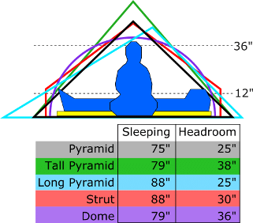

The goal of Fit My Tent is to provide real-world measurements for the usable space of a variety of tents.
|
The diagram to the right shows a 6-foot tall person sitting up and laying down in several styles of tents. Each style of tent makes different tradeoffs. These tradeoffs affect whether the tent provides more sleeping length, more headroom, or both. Finding the right tent that fits you could be a long process of trial and error. Or you could use our measurement system to find your perfect fit. |
 |
This measurement system was originally proposed on Andrew Skurka's blog: Backpacking shelters for the BIG & tall, and those who sprawwwl. I owe a great deal of gratitude to Andrew for helping me refine this idea and giving me a platform to publish it on. Check out that post for background on why this measurement system is superior to the typical measurements of footprint area and peak height.
Don't see a tent on this site that you'd like to buy? Contact its manufacturer and tell them about us!
Own a tent that you don't see on this site? Check out the Measurements page then contact /u/hoofit on Reddit.